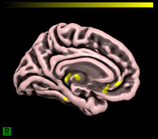
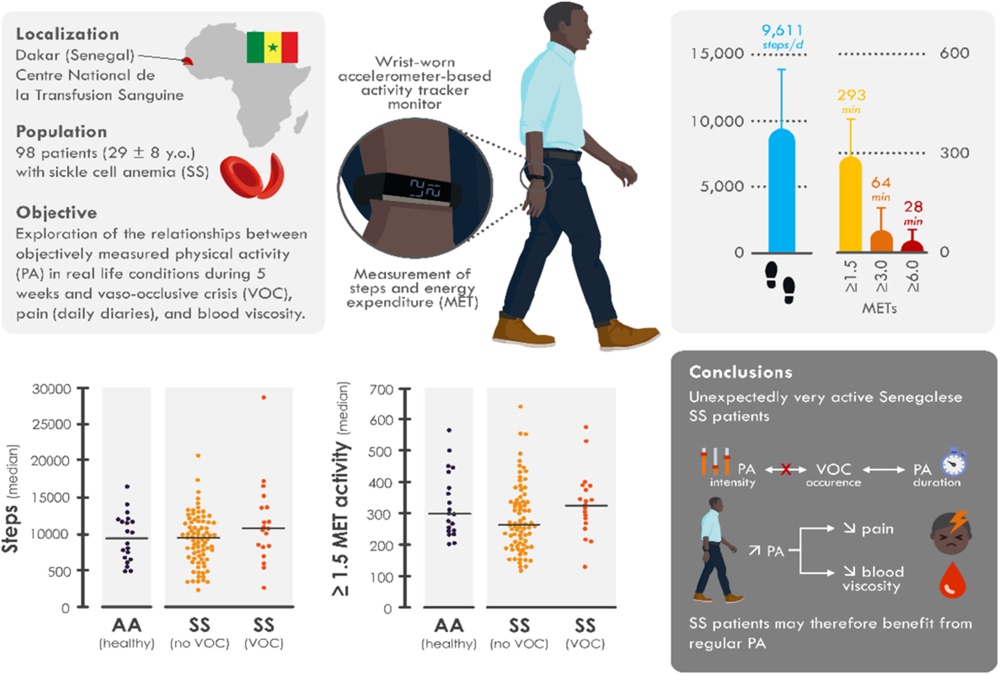
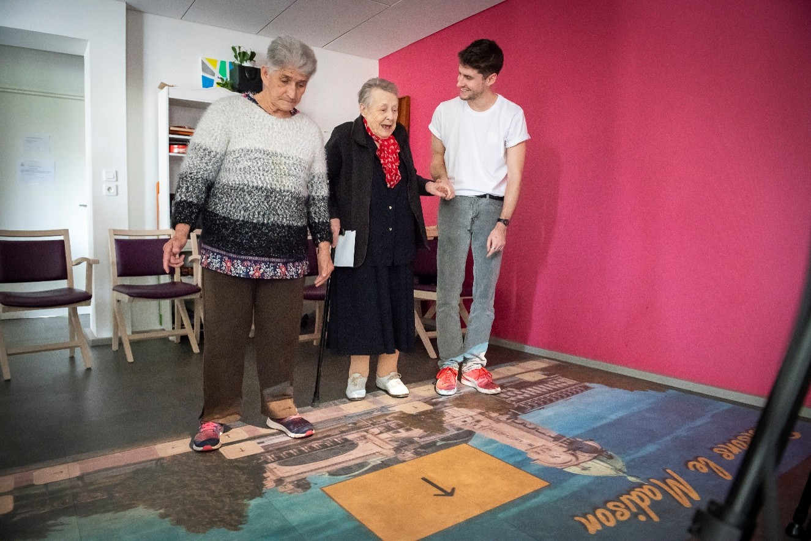

Matthieu Gallou-Guyot
Chercheur postdoctoral | Kinésithérapeute | Enseignant
Bio
Je suis un chercheur français intéressé par la rééducation, les sciences du sport et les neurosciences. En tant que kinésithérapeute, je travaille à l’interface entre la pratique clinique appliquée et la recherche basée sur les données. Curieux et mobile, j’ai vécu et travaillé en France et au Japon. Passionné par les animaux, je suis aussi un grand amateur de sport, notamment d’activités de plein air et d’arts martiaux.
Je me suis spécialisé dans le domaine du vieillissement actif, avec une approche plus clinique que fondamentale. Je m’intéresse à des problématiques liées au maintien de l’autonomie et à la lutte contre la fragilité, comme l’interférence cognitivo-motrice ou la peur de tomber. J’utilise des approches ludiques, parfois basées sur l’exergaming ou les technologies d’actimétrie.
Pour plus d’informations détaillées et à jour sur mon travail, veuillez consulter mon CV. Vous pouvez aussi suivre mes dernières actualités dans la section actualités. N’hésitez pas à me contacter pour toute question, discussion ou opportunité de collaboration !
Recherche
Je crois fermement à la valeur d’une recherche clinique translationnelle et impactante. Dans cet esprit, je m’engage activement dans la communication scientifique — aussi bien auprès des publics spécialisés que du grand public — et je participe à des initiatives de science ouverte. Je présente brièvement ci-dessous mes projets passés et actuels ; vous trouverez l’ensemble de mes travaux dans la section productions.

En tant que postdoc à l’Université de Tokyo, j’étudie l’activité cérébrale mesurée par IRMf.
L’objectif est d’évaluer si, et comment, la présentation de différents stimuli — en conditions unimodales ou multimodales —
peut améliorer la précision prédictive de divers modèles d’encodage et de décodage.
Projet en cours ; premiers résultats préliminaires interessants
[1].
L’usage intensif des outils d’apprentissage automatique m’a permis d’acquérir de précieuses compétences,
dont une grande partie est disponible en libre accès sur GitHub
[2].

Le projet drePAnon [1]
est une collaboration internationale entre Dakar, Lyon et Tokyo, à laquelle j’ai participé en tant que postdoc à l’Université Ochanomizu.
De 2019 à 2025, nous avons recruté plus de 100 patients atteints de drépanocytose à Dakar
et évalué l’impact de leur activité physique sur divers facteurs biomédicaux, dont des marqueurs d’inflammation et de douleur.
Jusqu’à présent, l’intensité de l’activité physique ne semble pas être associée à la gravité des complications cliniques
[2].
Si ces résultats se confirment, ils pourraient avoir d’importantes implications cliniques en encourageant l’activité physique dans cette population.

De 2019 à 2022, nous avons conçu, développé et évalué l’efficacité d’un exergame personnalisé
[1] ciblant les capacités cognitivo-motrices des personnes âgées.
Ce projet INCOME faisait partie de ma thèse au laboratoire HAVAE,
et a mobilisé 3 animateurs, 40 participants et plusieurs étudiants.
Globalement, nous avons montré que notre exergame améliorait les fonctions cognitives et maintenait les capacités motrices chez les personnes âgées
[2].
Surtout, nous avons démontré que cette solution sur mesure était bien accueillie par tous les utilisateurs — aussi bien joueurs qu’encadrants
[3].
Ces résultats prennent encore plus de sens car ils ont été obtenus durant la pandémie de COVID-19 et les confinements associés.
Enseignement
J’enseigne aux étudiants de licence et de master en kinésithérapie et en sciences du sport,
avec un focus sur la gériatrie, la pratique clinique et la méthodologie de recherche.
Je défends une pédagogie active et l’importance de l’apprentissage pratique, ciblé et basé sur des projets.
J’encadre également des mémoires de licence et de master.
Pour les étudiants : j’essaie de répondre autant que possible aux questions liées aux projets de recherche, stages ou cours.
Liens
Voici quelques liens vers différentes plateformes. Merci de noter qu’ils sont automatiquement mis à jour par des algorithmes et peuvent contenir des erreurs.
日本語 :
🇯🇵